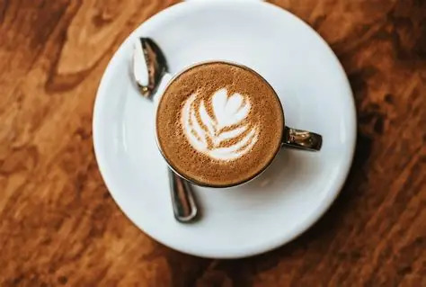

JBee's - The Donuts & Coffee Shop
A cafe option to explore if you enjoy coffee, donuts and casual meetups.
Area: Nirmala Convent Road area
Find on Google Maps →Looking for great coffee, delicious food or a relaxing place to meet friends? Explore our guide to cafes and coffee spots in Rajkot, Gujarat.
Explore CafesRajkot has a variety of places where you can enjoy coffee, snacks and time with friends. This guide helps you discover cafes for casual meetups, birthday celebrations, study sessions and relaxing evenings.
Explore cafe suggestions, check their locations and visit the official pages for the latest menus and timings.
Explore these cafe suggestions and check current details before planning your visit.

A cafe option to explore if you enjoy coffee, donuts and casual meetups.
Area: Nirmala Convent Road area
Find on Google Maps →
Explore this cafe option for a relaxed coffee break and a cafe-style food experience.
Area: Race Course Road area
Find on Google Maps →
A familiar coffeehouse brand to consider when looking for coffee and other beverages.
Location: Check current Rajkot outlets
Find on Google Maps →Choose a cafe based on what you want to do.
Explore cafes serving coffee and other beverages. Check each cafe's current menu before visiting.
Look for cakes, donuts, desserts and snacks available at your chosen cafe.
Find a comfortable place to catch up with friends or spend time with family.
Planning something special? Here are a few things to consider while choosing a cafe.
Look for cafes that allow cake cutting, decorations and group bookings. Confirm their policies before making plans.
Check recent customer photos to find cafes with attractive interiors and comfortable seating.
If you need a study spot, check Wi-Fi availability, seating, noise levels and opening hours.
Use Google Maps to check directions, recent reviews and current business information.
Search for coffee shops, cafes and places to eat throughout Rajkot, Gujarat.
Explore Rajkot on MapsHave a favourite cafe in Rajkot? Suggest it to help other coffee lovers discover new places.
This is an independent cafe guide and is not affiliated with the businesses listed.